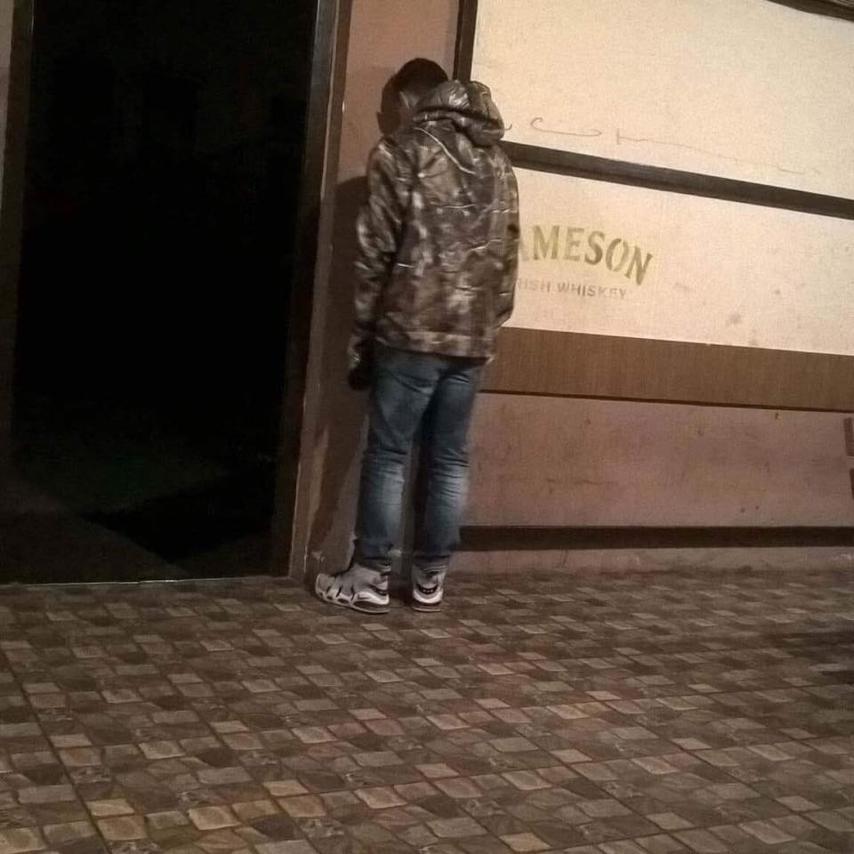

Kristián Špak
Volám sa Kristián Špak. Mám 22 rokov. Pochádzam z mesta Svidník. Študujem na Slovenskej technickej univerzite v Bratislave, Fakulta elektrotechniky a informatiky. Medzi moje záľuby patrí programovanie ,šport, filmy a seriály.

Dobrý deň. Volám sa Denis, mám 21 rokov a som zo Svidnika na vychodnej strane republiky. Medzi moje záľuby patrí hra na hudbných nástrojoch, pexeso a kúpanie sa v našom mori Domaša.
Volám sa Kristián Špak. Mám 22 rokov. Pochádzam z mesta Svidník. Študujem na Slovenskej technickej univerzite v Bratislave, Fakulta elektrotechniky a informatiky. Medzi moje záľuby patrí programovanie ,šport, filmy a seriály.
Po skončení vojny striedal zamestnania, živil sa hlavne ako dôverník Reichswehru (armáda a námorníctvo) v Mníchove, v Bavorsku, ktoré bolo ako slobodný štát súčasťou Weimarskej republiky. Bola to funkcia spojky medzi armádou a vládou vedenou židovským predsedom vlády Eisnerom, ktorého pohrebu sa Hitler 26. februára 1919 osobne zúčastnil. Za Eisnera bolo Bavorsko deklarované ako ľudový štát (Volksstaat Bayern). Eisner, sociálny demokrat, bol zavraždený vo februári 1919, čo viedlo ku komunistickej revolúcii a vzniku Bavorskej republiky rád, ktorá bola vyhlásená 6. apríla 1919. Po vojenskej porážke Bavorskej republiky rád v máji 1919 obviňoval Hitler pred súdom svojich kamarátov z pluku za to, že spolupracovali práve s republikou rád. Potom sa dokázateľne niekoľkokrát stretol s veliteľom oddelenia vyšetrovania (Aufklärungsabteilung) Reichswehru Karlom Mayrom, čo viedlo k domnienkam, že sa stal dôverníkom tajnej služby. Isté je, že v júni a v júli 1919 absolvoval „antiboľševistické školenia“ na mníchovskej univerzite a v septembri 1919 prenikol do Nemeckej robotníckej strany (Deutsche Arbeiterpartei – DAP), ktorú sledovali Mayrovi dôverníci ako možný zdroj boľševizmu a spartakizmu. Táto socialisticko, nacionalisticko a xenofóbno-antisemitsky orientovaná strana mala málo členov a tak v októbri 1919 Hitler namiesto donášania sa stal jej 55. straníkom (s Mayrovým súhlasom). Do strany ho prijal predseda Anton Drexler, pretože na zhromaždeniach, konaných väčšinou v krčmách, sa Hitler prejavil ako dobrý rečník, už vtedy so svojou typickou gestikuláciou. Až do 31. marca 1920 bol Hitler zamestnancom armády (Reichswehru). Potom sa stal plateným straníckym rečníkom. V roku 1920 presadil Hitler zmenu názvu strany s prívlastkom národnosocialistická (Národnosocialistická nemecká robotnícka strana – Nazionalsozialistiche Deutsche Arbeiterpartei – NSDAP) a spolu s Drexlerom a Gottfriedom Federom spísali 25-bodový program strany.[10] Hitlerov neskorší osobný tajomník Rudolf Hess, ktorý sa stal členom NSDAP v máji 1920 (členská legitimácia č. 16) bol zároveň členom okultistickej spoločnosti Thule (bájny ostrov, z ktorého vraj vzišla árijská rasa), ktorá inšpirovala NSDAP použitím svastiky, symbolov runového písma a pod. Kľúčovou postavou prvých rokov NSDAP bol kapitán Ernst Röhm, ktorý pomohol vyzbierať peniaze.[10] V decembri 1920 kúpila NSDAP od vydavateľstva Franz-Eher-Verlag zadĺžené noviny Völkischer Beobachter (doslova Ľudový pozorovateľ) za 155 000 mariek a postupne získavala vplyv a nových priaznivcov. V roku 1921 sa Hitler zmocnil vedenia strany tým, že v nej zaviedol "vodcovský princíp" a predsedu Drexlera odsunul za čestného predsedu. Teraz už bol známou osobnosťou v Bavorsku, ale mimo neho bol podceňovaný[11]. Ako vodca nemeckého nacizmu viedol v Mníchove neúspešný takzvaný "pivný", "pivnicový" alebo Hitler- Ludendorffov pokus o puč, pri ktorom 9. novembra 1923 pri prestrelke s políciou zomrelo 16 pučistov a 4 policajti. Hitler sa len zranil pri páde ale udalosť neskôr využil propagandisticky legendou o zastrelených martýroch a krvavej zástave (Blutfahne). Po dvoch dňoch bol zaistený a keďže v tom čase súdy v Nemecku boli veľmi mierne voči pravicovému extrémizmu (sudca si dokonca od Hitlera vypočul kritiku, že je Žid), dostal Hitler len 5 rokov vtedy existujúceho tzv. väzenia cti v Landsbergu (kde nebolo treba pracovať a pod.). Vo väzení diktoval svoju knihu Mein Kampf, ktorá sa pôvodne mala volať Štyri a pol roka boja proti klamstvám, hlúposti a zbabelosti. Odsedel menej ako 9 mesiacov a 20. decembera 1924 bol prepustený za dobré správanie. Po prepustení sa obával, že by mohol byť z Bavorska vyhostený do Rakúska, kde by bol bezvýznamný a v roku 1925 si dal odňať rakúske občianstvo, nemecké však získal až roku 1932, keď sa zamestnal na Úrade pre kultúru a meranie krajiny v Braunschweigu. Vybavením nemeckého občianstva bola poverená Hitlerova podporovateľka Magda Quandtová (vtedy manželka veľkopodnikateľa Günthera Quandta, neskoršie manželka ministra propagandy Josepha Goebbelsa). Vo februári 1925 sa NSDAP ako jedinej z extrémistickych strán podarilo dosiahnuť zrušenie zákazu svojho pôsobenia, ktoré platilo od puču v novembri 1923. NSDAP vydávala nové preukazy aj členom iných strán a prevzala a zreorganizovala aj ozbrojené oddiely SA a SS. V rokoch 1924 až 1929 sa nemecká ekonomika vďaka dotáciám zo zahraničia relatívne stabilizovala a vyzeralo to, že Nemecku sa podarí prekonať úpadok spôsobený vojnou. Vo voľbách v máji 1928 získala NSDAP len 2,6 % hlasov (810 127) napriek tomu, že počet členov na konci roka 1928 bol už približne 130 000. Čím horšie sa darilo Nemecku, tým lepšie sa darilo nacistom.[10] Veľká hospodárska kríza, ktorá začala v roku 1929 aj v Nemecku spôsobila nezamestnanosť a nespokojnosť, ktorá pomohla Hitlerovi a jeho strane dostať sa k moci. 27. marca 1930 sa rozpadla koalícia demokratických strán, ktorá bola základom tzv. Weimarskej republiky. Vo voľbách do Ríšskeho snemu v júli 1932 sa NSDAP s 37,4 % hlasov stala najsilnejšou stranou a prezident Paul von Hindenburg Hitlera 30. januára 1933 menoval ríšskym kancelárom. V roku 1933 bolo nezamestnaných viac ako šesť miliónov Nemcov a životná úroveň dramaticky nízka.

Ahojte, volám sa Matúš Gossányi, momentálne mám 22rokov a študujem 3. bakalársky ročník na fakulte elektrotechniky a informatiky na STU, v Bratislave. Pochadzam z maleho mesta na Orave, z Trstenej. Medzi moje zaluby patri Futbal, programovanie, hudba, politika.